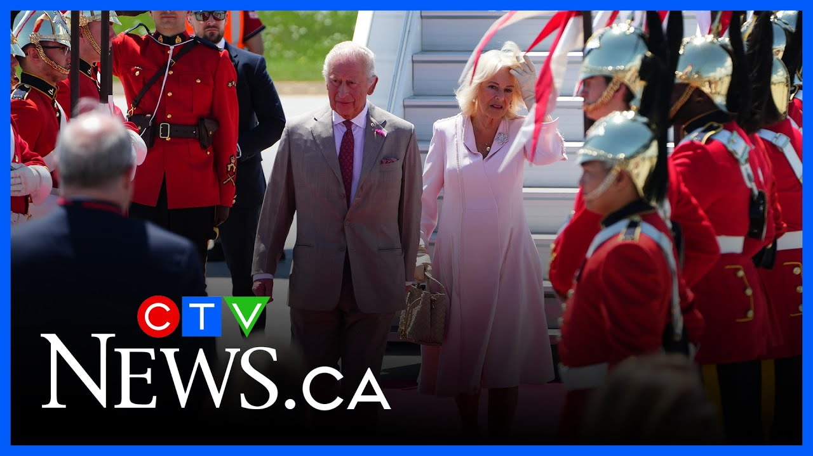

【查尔斯国王和卡米拉王后抵达渥太华进行正式加拿大访问】
Summary: King Charles III and Queen Camilla begin their historic 24-hour Canadian visit, greeted with Canadian symbols and military honors.
摘要： 查尔斯三世国王和卡米拉王后开始了历史性的24小时加拿大访问，受到加拿大象征和军事荣誉的欢迎。

⏱️ Estimated Reading Time: 2 min
This is the moment we let it breathe in for a few minutes.
这是让我们稍作停顿的时刻。
The first visual of King Charles III and Queen Camila stepping down, disembarking the aircraft.
查尔斯三世国王和卡米拉王后走下飞机的第一画面。
All set for this 24-hour very hectic, momentous, historic trip.
一切准备就绪，迎接这24小时紧张、重大且历史性的旅程。
Richard Beren, CTV News Royal commentator, is also joining us.
CTV新闻皇家评论员理查德·贝伦也加入了我们。
Aia request you to stay with us.
Aia请您继续关注我们。
Richard, your first thoughts as we look at this very, very momentous and historic moment.
理查德，您对这个极其重大且历史性时刻的第一反应是什么？
Well, I mean, you certainly have an array of Canadian symbols all there in a row.
嗯，我的意思是，这里显然有一系列加拿大象征排列在一起。
You have the aircraft which in is marked the true north, strong and free, a line from our anthem.
这架飞机上标有“真正的北方，强大而自由”，这是我们国歌中的一句歌词。
The king is now walking through a quarter guard from the Royal Canadian draons in respendant in their red uniforms.
国王正走过由身着红色制服的加拿大皇家龙骑兵组成的仪仗队。
uh he's about to meet uh Don Booth there who is the Canadian secretary to the queen or the king rather and on to the governor general.
呃，他即将会见加拿大女王秘书（或更确切地说是国王秘书）唐·布斯，然后会见总督。
So I mean you have that the king walking down that flank of soldiers from the aircraft of the Royal Canadian Air Force.
所以我的意思是，国王正沿着加拿大皇家空军飞机旁的士兵队列前行。
I mean no no dispute there who has transported the king.
我的意思是，毫无疑问是谁运送了国王。
It is a Canadian affair.
这是加拿大的事务。
And of course you also have this royal standard flying.
当然，您还可以看到皇家旗帜飘扬。
This is the first use of the king's royal standard uh since he succeeded to the throne.
这是他继位以来首次使用国王的皇家旗帜。
It was changed slightly from from the previous.
它与之前的旗帜略有不同。
And of course, now you have the prime minister and Mrs. [Music]
当然，现在您可以看到总理和夫人。[音乐]